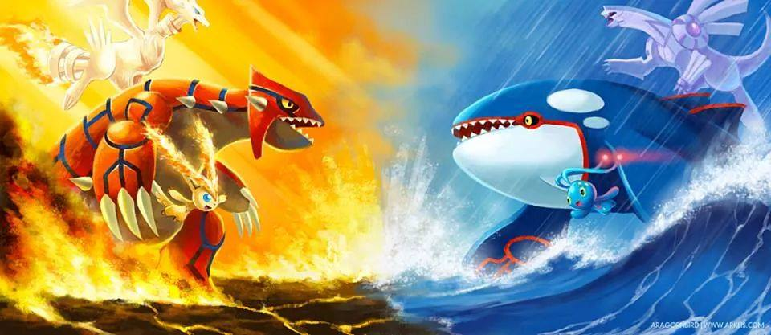

Tipos de Pokemon`s
|
Los Pokémon pueden desarrollar poderes y tener cierta ventaja o debilidad a determinados elementos, así como una morfología similar a la de otras especies, que permite clasificarlos dentro de lo que llamamos tipo. Cada tipo tiene sus puntos fuertes y puntos débiles, y algunos Pokémon, incluso, pueden pertenecer a dos tipos a la vez. Hay movimientos con los cuales algunos Pokémon pueden realizar cambios de tipo. De la misma forma, los movimientos de los Pokémon se clasifican dentro de un tipo. |
 |
Tipos
Subtipos o segundos tipos
Se le conoce como segundo tipo a un tipo secundario que pueden desarrollar los Pokémon. El subtipo normalmente sólo afecta a los tipos de movimientos que va a poder aprender el Pokémon, pero también en una mínima parte a su aspecto físico.
Además, un subtipo puede influir en la efectividad de los movimientos que reciba un Pokémon. Por ejemplo: un Trapinch tiene como debilidad los ataques de tipo hielo, agua y planta, y es resistente a los ataques de tipo roca y veneno. Si Trapinch evoluciona a Vibrava gana un subtipo (que es el tipo dragón), por lo que ahora su debilidad es ante los ataques de tipo dragón, hielo y hada. Se le agregan los tipos dragón y hada por tener de subtipo dragón (que es una debilidad de estos) y se le quitan las debilidades a agua y planta porque su subtipo es resistente a estos dos. Aunque debido a su subtipo, ahora es más débil contra el tipo hielo.
Otro ejemplo son los tipo volador. Estos son resistentes ante los ataques tipo lucha, pero hay muchos que son de tipo normal por lo que los ataques tipo lucha tienen una efectividad normal ante estos. En total, 347 especies de Pokémon, es decir, el 48,3% del total, tienen un tipo secundario. Para este cálculo se tomó a Shaymin como un tipo planta/volador y se supuso que Wormadam, Rotom y Meloetta no varían de tipo.
Categorías de daño de los movimientos
Los movimientos se reparten en tres categorías de daño (Damage category en inglés) dependiendo del tipo de daño que provoquen: físico
especial
o de estado.
Hasta la tercera generación, según a qué tipo pertenecían los movimientos, estos se clasificaban entre físicos y especiales a efectos del daño que producían. Sin embargo, esta clasificación no siempre reflejaba la verdadera naturaleza de cada movimiento, al haber movimientos que pertenecían a un tipo clasificado como especial pero que no desempeñaba ningún poder especial o viceversa. Por esta razón, a partir de la cuarta generación esta clasificación ya no es válida, y cada movimiento pertenece a una categoría de daño independientemente del tipo del movimiento en combate.
Efectividades de los Tipos